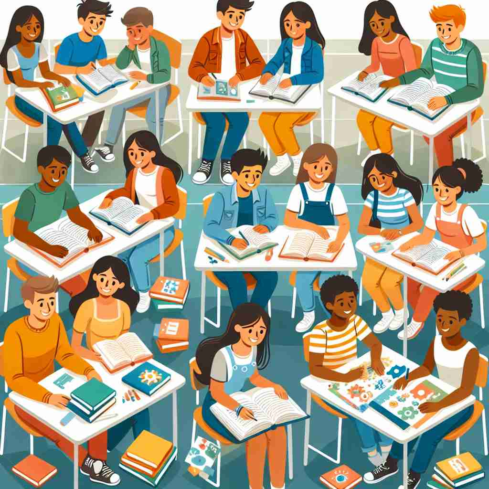

💬 The students are happy to study with classmates during their lessons.

💬 I see my classmate in the classroom.
🔈 ['klɑːsmeɪt]
🗝️ n. a person who is in the same class as you at school or college
🖼️ 在一个阳光明媚的教室里，小明坐在桌子旁，与他的同学小红一起听课。老师正在讲解新知识，他们互相分享课本，共同探讨问题，体现了 'classmate' 作为当前同班同学的含义。
🔍 记忆 'classmate' 的关键在于理解它由 'class' （班级）和 'mate' （伙伴）组成。想象你和其他人一起坐在教室里学习的场景。无论是现在的同学、过去的同学，还是在任何学习环境中的学习伙伴，都源于这个共同学习的核心概念。这有助于你更好地理解和记忆这个词的各种用法。
💬 The students are happy to study with classmates during their lessons.
💬 I see my classmate in the classroom.
🌳 由 'class'（班级）和后缀 'mate'（同伴，伙伴）组成，表示 '同班同学'。
💡 记忆 'classmate' 时，可以想象班级里互相学习和交流的小伙伴，将 'class' 和 'mate' 的概念结合在一起，轻松理解其意义为 '同班的朋友'。
🗝️ n. a person who shared a class with you in the past
🖼️ 在大学校友聚会上，小李见到了多年不见的老同学小王。他们一起回忆起那些年在校园里一起听课、做作业的日子，'classmate' 在这里指的是曾经的同班同学。
💬 She met her old classmate at the school reunion.
❓ 扩展到过去的同学关系
🗝️ n. a fellow student in any learning environment
🖼️ 在一个周末英语培训班里，张女士和其他学员围坐在一张桌子旁。大家各自介绍自己，并开始小组讨论，展示了 'classmate' 作为在任何学习环境中的学习同伴的含义。
💬 We became classmates in our online Spanish course.
❓ 扩展到非传统学习环境